13 Structured Products II
- BLÜMKE, Andreas. How to invest in structured products: a guide for investors and investment advisors. Chichester: Wiley, 2009. xvi, 374. ISBN 9780470746790.
Learning Outcomes:
- Identify and explain the mechanisms and purposes of different yield enhancement structures such as reverse convertibles and discount certificates.
- Analyze strategic variations in yield enhancement products, including ways to enhance the coupon and general investment strategies.
- Evaluate the behavioral dynamics of yield enhancement products under varying market conditions.
- Utilize case studies, such as knock-in reverse convertibles, to understand practical applications and implications of product behaviors.
- Describe common special features in structured products, including autocall and callable options, and their impact on product performance and investor options.
13.1 Yield Enhancement Investment Products
Yield enhancement products are financial constructs with capped upside potential and without capital guarantee, aiming to generate high returns relative to bond yields. The risk level may approach that of the underlying assets in unfavorable market scenarios.
- Category Significance: This is the largest category of structured products in terms of both the variety of structures available and the volume of investments.
- Capped Upside: Historically, all yield enhancement products feature a capped upside, contrasting with participation products that offer unlimited upside potential.
- Popular Types: The most prevalent forms are reverse convertibles and discount certificates, which share similar payout profiles but differ in construction.
Reverse Convertibles
- Components:
- Zero-Coupon Bond: Purchased to cover the product’s lifetime, providing the base return.
- Short Plain Vanilla Put Option: Sold on the underlying risky asset to generate additional premium.
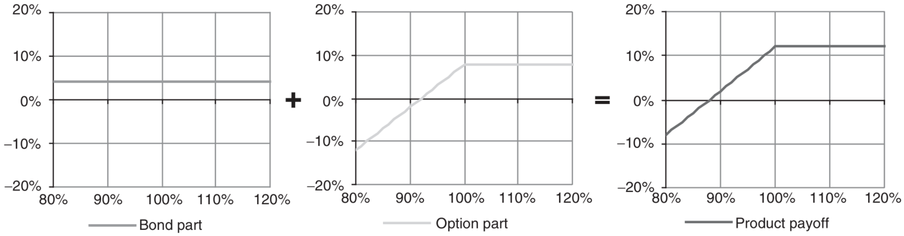
The zero-coupon bond yields 4%, and the short put option provides a premium of 8%. The combined coupon is 12%, allowing the underlying asset to decline by up to 12% before the investor experiences a loss.
- Risk Considerations: The maximum potential loss is limited to the coupon received. However, the risk of loss increases if the underlying asset’s price falls significantly beyond the cushion provided by the coupon.
Worst-of Barrier Reverse Convertible
- Enhanced Features:
- Multiple Underlyings: The payoff depends on the performance of the worst-performing asset.
- Knock-in Barrier: Added to the short put option to provide conditional capital protection unless the barrier is breached.
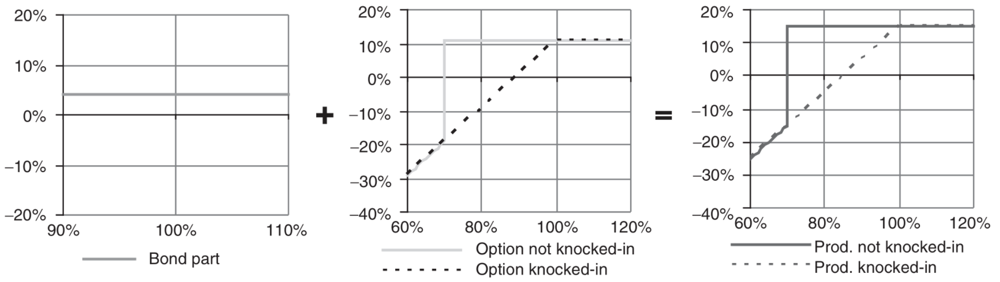
- Behavioral Dynamics: The presence of a barrier can lead to a sharp price adjustment if the underlying reaches this level, activating the put option.
Discount Certificates
- Structure:
- Long Zero-Strike Call Option: Replicates the performance of the underlying asset.
- Short Call Option: Set at- or out-of-the-money to provide upfront income by reducing the purchase price.
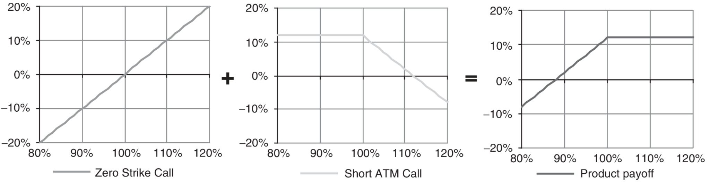
Economic Rationale: The premium from the short call lowers the effective purchase price of the zero-strike call, providing an immediate financial benefit, which contrasts with the deferred coupon payment structure of reverse convertibles.
Tax Efficiency: In some jurisdictions, the structure of discount certificates can offer tax advantages over other investment products.
Strategic Variations and Recommendations
- Barrier-Linked Coupons: Linking the coupon payment to the breaching of one or more barriers can significantly increase the potential return but also adds to the risk.
- Individualized Barriers: In worst-of barrier products, setting specific barrier levels for each underlying can tailor the risk to more accurately reflect the volatility and performance expectations of each asset.
- Barrier Perception: Investors should not underestimate the risk associated with barriers, as these are high-risk products without capital guarantees.
- Product Complexity: Avoid investing in products based on too many underlying assets to manage risk more effectively. Preferably, limit the number of underlyings to two.
- Barrier Style: Opt for European-style barriers when market volatility is high and the medium-term market trajectory is uncertain, as these barriers typically offer a lower coupon but reduce the risk of early activation.
13.2 Behavior of Yield Enhancement Products
Knock-In Reverse Convertibles - Case Study
Knock-in reverse convertibles are complex financial instruments designed to enhance yields by incorporating a conditional protection feature, which activates under specific market conditions. Here’s a detailed analysis of the behavior of such products, using a specific example for illustration.
| Characteristic | Details |
|---|---|
| Underlying Risky Asset | Eurostoxx50 Index |
| Maturity | 1 year |
| Implied Volatility | 23% |
| Asset’s Dividend Yield (p.a.) | 4.0% |
| Interest Rate (4-year swap rate, p.a.) | 4.5% |
| Barrier Level (% of spot) | 75% |
| Coupon | 10.4% |
| Factor (Increase) | Impact on Product’s Price | Impact Level |
|---|---|---|
| Spot Price | Positive | Maximum |
| Implied Volatility | Negative | High |
| Implied Correlation | Positive | Medium-Low |
| Interest Rates | Negative | Low |
| Dividends | Negative | Low |
Variations in Spot Price
- At Issue Date: The product exhibits bond-like characteristics when the spot price of the underlying asset increases, yet behaves akin to the asset itself with a decline in price, increasing the delta.
- Near Maturity: A significant gap develops; the delta can exceed 1, indicating increased sensitivity to spot price movements.
- Delta Analysis: The delta of approximately 34% suggests a 34% probability that the underlying’s price decline will activate the knock-in feature (e.g., a 25% or greater drop in the Eurostoxx50).
- Investor Perception: While less risky than direct exposure to the underlying asset, the delta range (30%-40%) illustrates that these products are considerably more volatile than bonds.
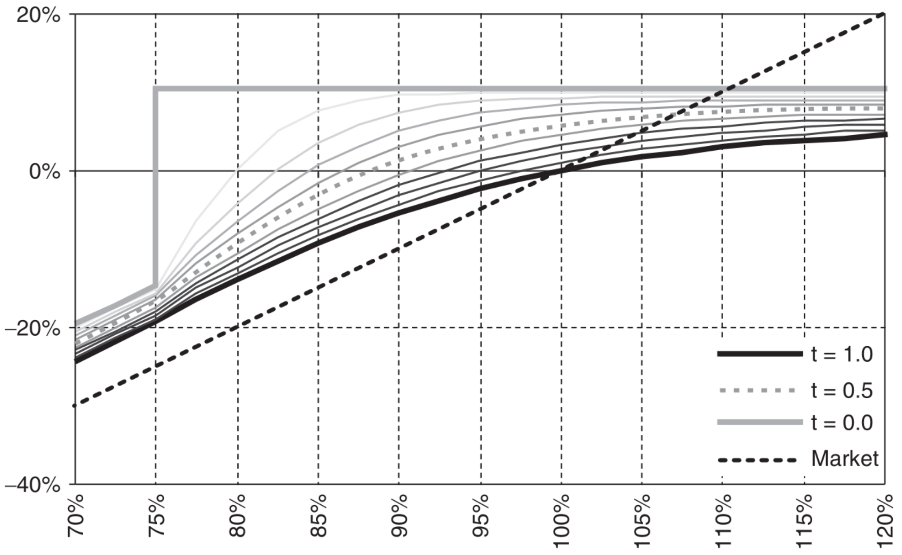
Impact of Implied Volatility Changes
- Price Sensitivity: Implied volatility significantly affects the product’s price, particularly near the barrier. A lower volatility reduces price sensitivity to spot variations except near this critical threshold.
- Investment Timing: Higher initial implied volatility is advantageous as it allows for purchasing more protective options at a lower cost. Conversely, a drop in volatility after issuance benefits the mark-to-market valuation.
- Product Lifespan: Don’t default to one-year products; sometimes shorter or longer maturities may align better with market conditions or portfolio strategies.
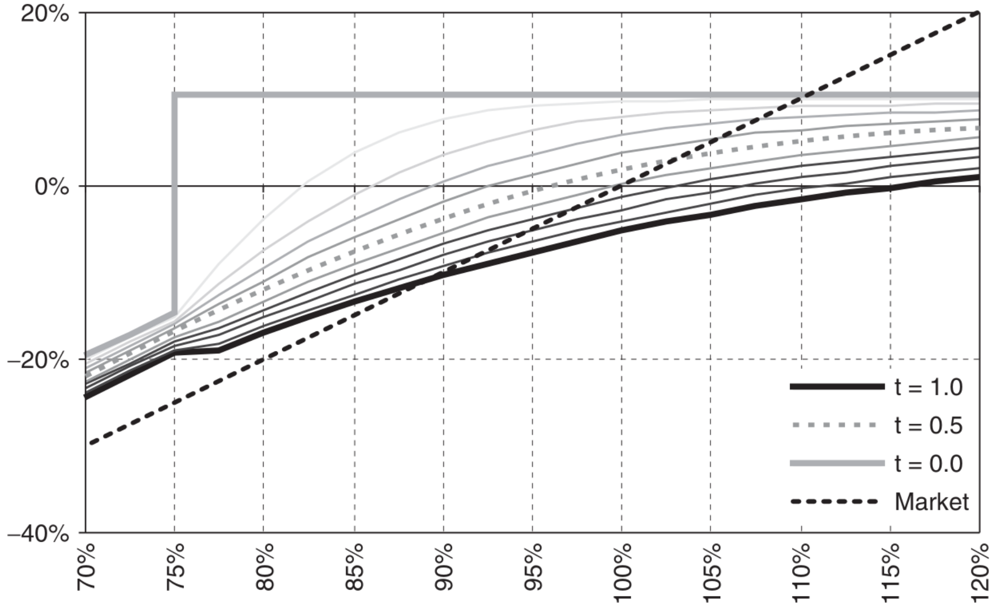
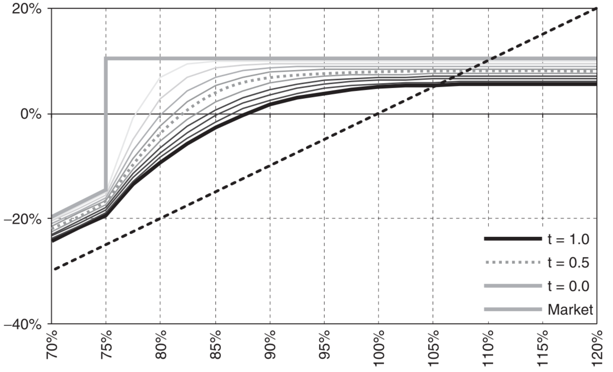
Understanding Implied Correlation
Implied correlation reflects the expected linear relationship between two or more assets, as inferred from market prices.
Significance in Multi-Asset Products: Essential for assessing the risk and potential return in products with multiple underlyings, such as ‘worst-of’ options, where a higher correlation can lead to enhanced coupon rates.
Asset Addition Risks: Introducing additional underlyings for a modest increase in coupon (1%-2%) is generally not justified by the associated increase in risk, particularly for volatile stocks.
Risk Assessment: Carefully evaluate the added value versus risk when including multiple assets. The incremental risk often outweighs the potential return enhancement, especially when the volatility of additional assets is high.
13.3 Leverage Products
Leverage products are financial instruments that provide a cost-effective way to gain exposure to various assets (shares, indices, commodities, currencies) with a smaller investment than purchasing the assets directly. These products amplify potential returns and increase the risk of loss, making them suitable for speculative purposes or for hedging against market movements.
Warrants
Warrants are financial instruments granting the holder the right, but not the obligation, to buy (Call Warrants) or sell (Put Warrants) an underlying asset at a predetermined price (strike price) on or before a specific date.
- Characteristics:
- Warrants are similar to options but usually have longer maturities and cover a broader range of underlying assets.
- Issued by financial institutions, warrants are bespoke products with terms set by the issuer.
- Investors face the credit risk of the issuer since warrants are not backed by the assets themselves.
- Warrants are highly liquid and can be used to leverage positions, hedge risks, or exploit arbitrage opportunities.
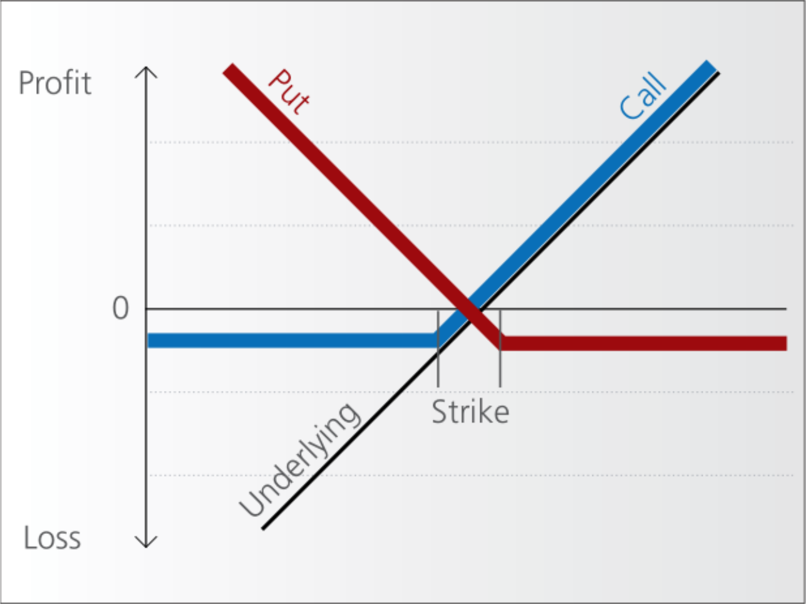
Types of Warrants
- Traditional Warrants: Issued by companies, often alongside bonds (“warrant-linked bonds”) to raise capital at a lower interest cost. These warrants can be detached and sold separately.
- Covered Warrants: Issued by financial institutions and backed by assets the institution holds or can acquire. They can cover a wide range of assets beyond equities.
- Naked Warrants: Issued without backing assets; issuers hedge their exposure through other means.
Spread Warrants
- Purpose: Designed to benefit from rising (bull warrants) or falling (bear warrants) markets.
- Risks and Rewards: While the initial investment is small and can yield significant leveraged gains, the maximum loss and gain are capped, and the value deteriorates as expiration approaches.
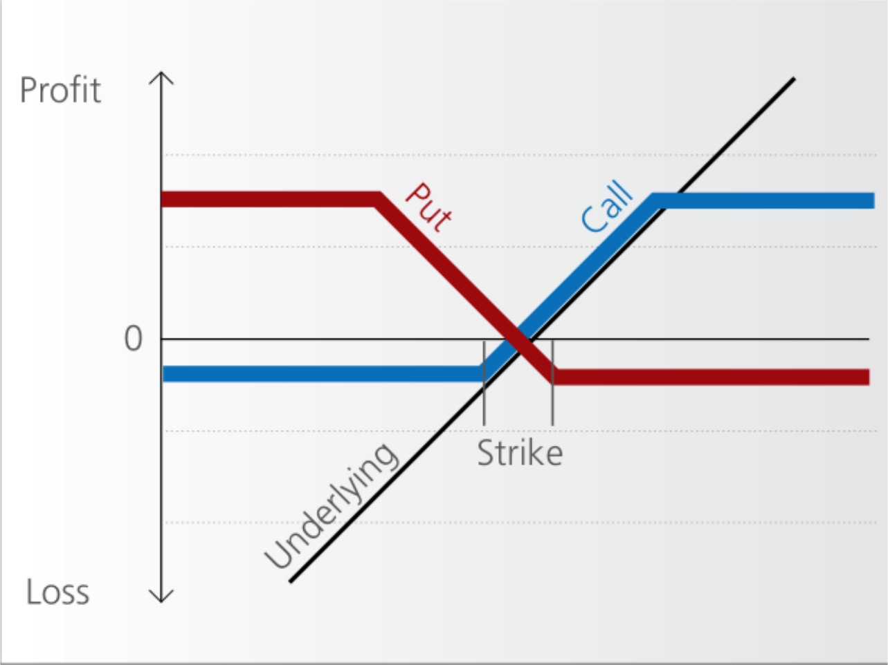
Knock-Out Warrants
- Feature: These products have an embedded barrier that, if reached, causes the warrant to expire worthless immediately.
- Market Suitability: Ideal for scenarios with clear directional market expectations and a significant buffer between the current price and the knock-out level.
- Risk Profile: Higher leverage compared to traditional warrants, with little to no time value, making them highly sensitive to market movements.
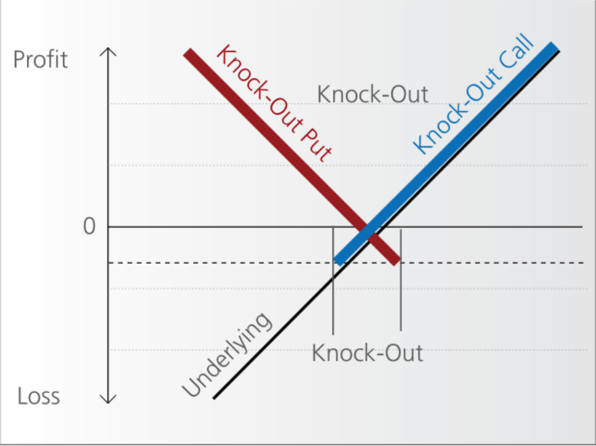
Double Knock-Out Warrants
- Design: These warrants have two barriers (upper and lower), offering a balanced approach to leveraging both upward and downward market movements.
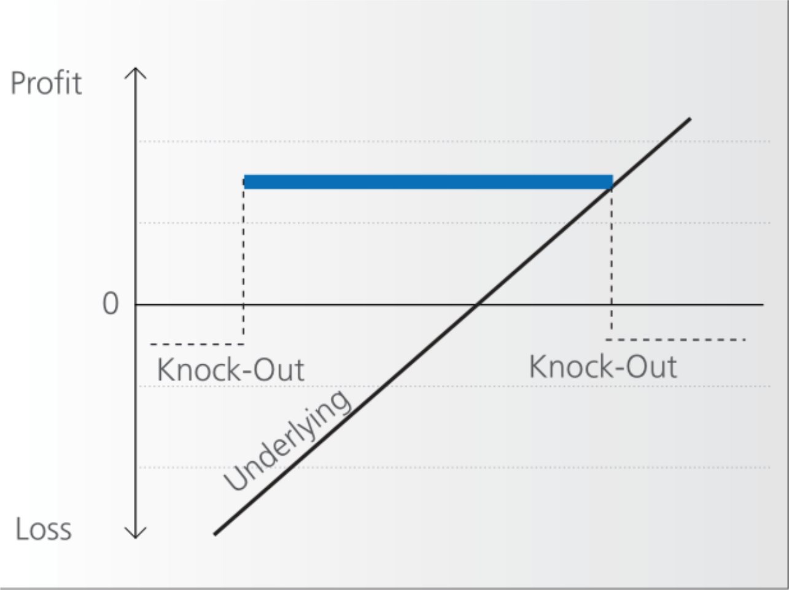
Mini-Futures
- Comparison with Warrants: Similar to knock-out products but open-ended, with no fixed expiration date unless the knock-out threshold is breached.
- Investment Strategy: Suitable for short-term speculative bets or hedging, with potential for residual value redemption after a stop-loss event.
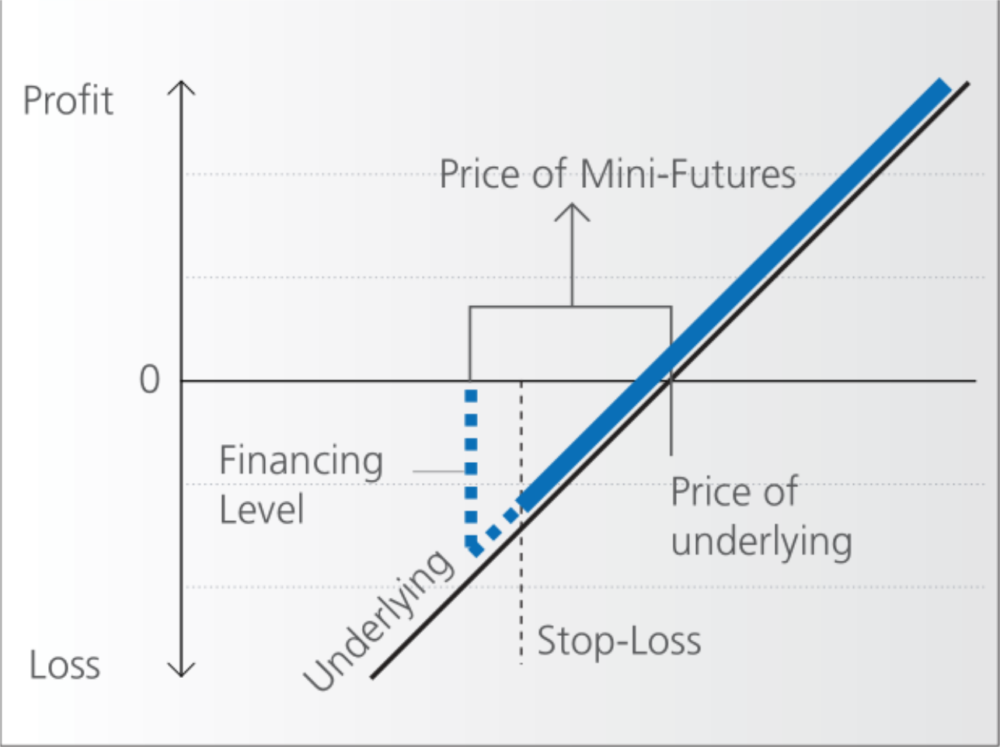
Constant Leverage Certificates
- Function: These certificates provide fixed daily leverage on the price movements of an underlying asset, without any knock-out barriers.
- Benefits: They offer continuous exposure to price movements, unaffected by the underlying’s volatility, and are not limited by time decay.
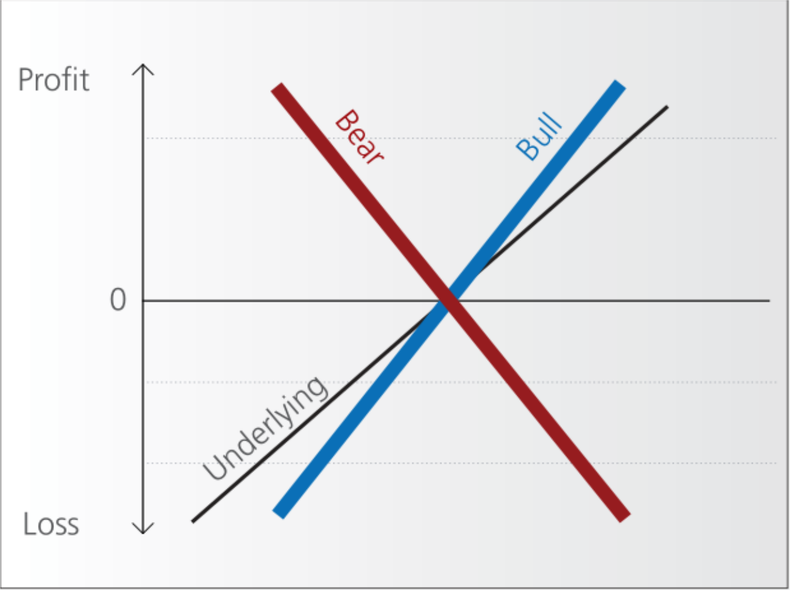
Additional Links
- https://www.investopedia.com/terms/w/warrant.asp
- https://en.wikipedia.org/wiki/Warrant_(finance)
- https://en.wikipedia.org/wiki/Covered_warrant
- https://www.six-structured-products.com/en/know-how/product-know-how/leverage-products-without-knockout/warrants
- https://www.six-structured-products.com/en/know-how/product-know-how/leverage-product-with-knock-out/knock-out-warrants
13.4 Common Special Features of Structured Products
Structured products often incorporate complex features to enhance their appeal to investors. These features, such as autocalls, callable options, and choices between physical or cash settlements, add flexibility and potentially higher returns under certain conditions, but also introduce specific risks and complexities.
Autocall and Callable Options
An autocall is a feature where the issuer is obligated to redeem the product when a predefined event occurs, which can be set to trigger at any time or on a specific date, at a predetermined price.
- Callable Options: Allow the issuer to decide whether to redeem the product on predetermined dates, providing more control over the product’s lifecycle.
Autocallable Notes
- Structure: Typically includes full capital protection with the issuer redeeming the product if the underlying asset closes above a certain threshold (e.g., 100%) at predefined observation dates.
- Returns: Investors receive their capital plus a coupon, which is a percentage multiplied by the number of years the product has run.
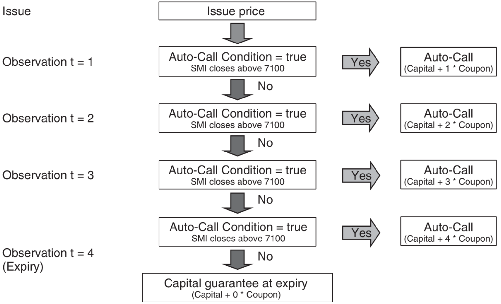
Express Certificate
- Features: Combines an autocallable structure with conditional capital protection, usually involving a down-and-in barrier option.
- Volatility Sensitivity: High sensitivity to volatility due to the barrier; investors are effectively short volatility, losing out when it rises.
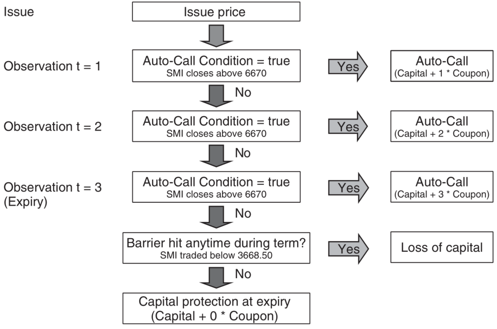
Autocallable Worst-Of Barrier Reverse Convertibles
- Mechanism: Functions like standard barrier reverse convertibles but includes an autocall feature that triggers early redemption if all underlying assets exceed a certain level (e.g., 105% of initial spot).
- Correlation Impact: The correlation between the underlyings is crucial, as it affects the likelihood of all assets meeting the trigger condition simultaneously.
Settlement Types in Equity-Based Products
Structured products based on equities, such as reverse convertibles or bonus certificates, can offer different types of settlements:
- Physical Delivery: Investors receive the actual shares at the redemption date, which might occur weeks after the expiry date of the embedded options.
- Cash Settlement: Provides investors with a cash amount equivalent to the value of the shares at expiry.
- Investor Considerations: Cash settlements are often preferred as they provide immediate liquidity and avoid the market risk associated with holding the actual shares until the redemption date.
- Market Preferences: Retail products are typically settled physically, appealing to investors’ behavioral tendencies to hold onto stocks rather than realizing losses.
Issue Minimum/Maximum Size and Liquidity Considerations
Minimum Size
- Cost Implications: The issuer will only launch a product if it can cover fixed and variable costs such as listing fees, back-office operations, and computational expenses.
- Investor Strategy: Prefer products from issuers with lower operational costs, as these savings can be passed on in the product’s pricing.
Maximum Size
- Risk Management: Issuers limit the size of a product based on their capacity to hedge the associated risks effectively, particularly for less liquid underlyings.
- Market Influence: Large hedging operations can inadvertently affect the market price of the underlying, potentially impacting the performance of the product.
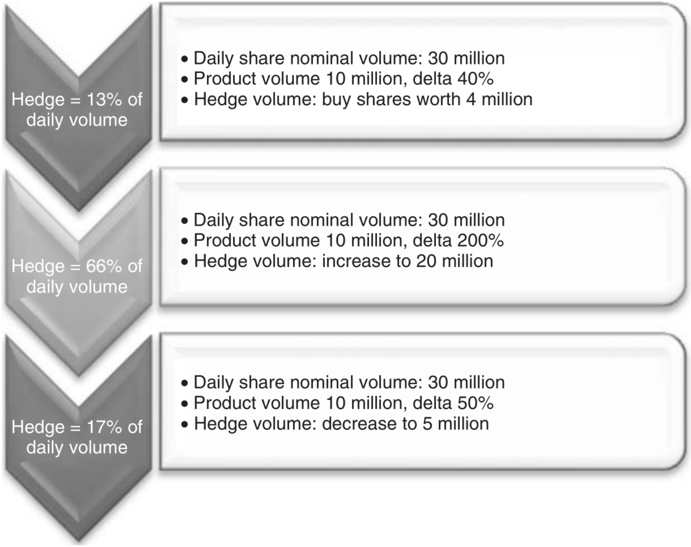
Liquidity
- Trading Spreads: Vary significantly by region and issuer; narrower spreads in markets like Germany enhance trading viability for smaller sizes.
- Secondary Market: Liquidity is typically provided by the issuer, making it essential for investors to consider the availability of market quotes, especially if they plan to trade the product before maturity.
13.5 Practice Questions and Problems
- What is the value of the reverse convertible at maturity if the value of the underlying asset ends at 100, the strike price of the certificate is 80, and the coupon is 12%? The strike price is equal to the initial spot price of the underlying.
89.6
- What is the value of the reverse convertible at maturity if the value of the underlying asset ends at 45, the strike price of the certificate is 60, and the coupon is 9%? The strike price is equal to the initial spot price of the underlying.
50.4
- What is the value of the barrier reverse convertible at maturity if the value of the underlying asset ends at 90, the strike price of the certificate is 100, the coupon is 7%, and the knock-out barrier is 70? The lowest value of the underlying asset during maturity was 65. The strike price is equal to the initial spot price of the underlying.
97
- What is the value of the barrier reverse convertible at maturity if the value of the underlying asset ends at 90, the strike price of the certificate is 100, the coupon is 7%, and the knock-out barrier is 70? The lowest value of the underlying asset during maturity was 75. The strike price is equal to the initial spot price of the underlying.
107
- What is the value of the barrier reverse convertible at maturity if the value of the underlying asset ends at 123, the strike price of the certificate is 100, the coupon is 7%, and the knock-out barrier is 70? The lowest value of the underlying asset during maturity was 65. The strike price is equal to the initial spot price of the underlying.
107
- What is the value of the barrier reverse convertible at maturity if the value of the underlying asset ends at 137, the strike price of the certificate is 100, the coupon is 7%, and the knock-out barrier is 70? The lowest value of the underlying asset during maturity was 75. The strike price is equal to the initial spot price of the underlying.
107
- What is the value of the autocallable note at maturity if the value of the invested capital was 1000, autocall occurs if the underlying price at the anniversary date is higher then initial asset price 4600, and the coupon is 6%? The price of the underlying each year ended at [4583, 4309, 5128, 5630].
1180
- What is the value of the autocallable note at maturity if the value of the invested capital was 1000, autocall occurs if the underlying price at the anniversary date is higher then initial asset price 4600, and the coupon is 4%? The price of the underlying each year ended at [4583, 4309, 3925, 4528].
1000
- What is the value of the autocallable note at maturity if the value of the invested capital was 1000, autocall occurs if the underlying price at the anniversary date is higher then initial asset price 4600, and the coupon is 8%? The price of the underlying each year ended at [4672, 4982, 5023, 5628].
1080
- What is the value of the express certificate at maturity if the value of the invested capital was 500, autocall occurs if the underlying price at the anniversary date is higher then initial asset price 2500, barrier is 1500, and the coupon is 14%? The price of the underlying each year ended at [2403, 2625, 2039, 2901]. The lowest value of the underlying asset during maturity was 1958.
640
- What is the value of the express certificate at maturity if the value of the invested capital was 500, autocall occurs if the underlying price at the anniversary date is higher then initial asset price 2500, barrier is 1500, and the coupon is 14%? The price of the underlying each year ended at [2200, 2350, 2194, 1830]. The lowest value of the underlying asset during maturity was 1820.
500
- What is the value of the express certificate at maturity if the value of the invested capital was 500, autocall occurs if the underlying price at the anniversary date is higher then initial asset price 2500, barrier is 1500, and the coupon is 14%? The price of the underlying each year ended at [2200, 1800, 1630, 1775]. The lowest value of the underlying asset during maturity was 1420.
355
- What is the value of the express certificate at maturity if the value of the invested capital was 500, autocall occurs if the underlying price at the anniversary date is higher then initial asset price 2500, barrier is 1500, and the coupon is 14%? The price of the underlying each year ended at [2200, 2431, 2700, 2398]. The lowest value of the underlying asset during maturity was 1420.
710
- What is the value of the long constant leverage certificate if the value of the underlying asset moves from 100 to 120, and the leverage was 3?
160
- What is the value of the long constant leverage certificate if the value of the underlying asset moves from 100 to 90, and the leverage was 5?
50
- What is the leverage of the mini-future certificate if the value of the underlying asset is 245 and financing level is 195?
4.9
- What is the leverage of the mini-future certificate if the value of the underlying asset is 350 and financing level is 290?
5.83